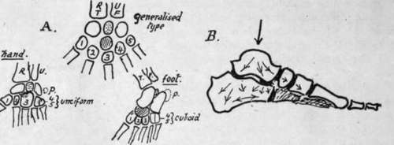

Development Of Bones Of Foot
Description
This section is from the book "The Anatomy Of The Human Skeleton", by J. Ernest Frazer. Also available from Amazon: The anatomy of the human skeleton.
Development Of Bones Of Foot
The bones are preformed in cartilage, which at birth shows centres for the shafts of the metatarsals and nearly all the phalanges, and for two or three of the tarsal bones.
The cartilage is first apparent in the sixth week, and the form of the various bones is distinct by the middle of the third month. The metatarsals are at first rather spread out and resemble the skeleton of the hand, but by the latter part of the third month they have come to lie closer together, and the foot exhibits a definite tarsal arch.
Fig. 157.-A., scheme to show the relations between the skeletons of hand, foot, and a general hypothetical type. The last has a preaxial bone, R.T., radius or tibia, and a postaxial, U.F., ulna or fibula ; these carry corresponding carpal or tarsal units which are separated by an " intermedium" (stippled). The distal row are the carpalia or tarsalia (numbered from preaxial side). Between the two rows an " os centrale " (shaded). This becomes the scaphoid in the foot but is fused with the os magnum or scaphoid in the hand. Os intermedium becomes semilunar in hand and os trigonum in foot. Pisiform (p) is represented by calcaneal epiphysis ; it has no place in the type form, and may stand for a rudimentary digit. B., scheme of transmission of weight and consequent direction of main lamellae in cancellous tarsal bones ; supporting lamella? run at right angles to the main ones.
Ossification of tarsus : one centre for each bone except os calcis, which has an epiphysis for its back part. The centre for astragalus and the main calcanean centre appear during the sixth month and that for the cuboid about birth, so that it may or may not present a nucleus at birth. The cuneiforms follow, the external first (one to two), then the inner (two to three), and lastly the middle one (three to four). The navicular commences to ossify about a year later.
The epiphysial centre for the os calcis appears between eight and ten, and joins the main bone about the age of twenty in males and about sixteen in females.
There are occasionally separate small nuclei for the posterior tubercle of the astragalus, and for the tuberosity of the scaphoid.
Metatarsus : centres for the shaft eighth to tenth week, and epiphyses in the third to eighth year, that for the first metatarsal appearing before the others. The epiphysis for this bone is at the proximal end, while those of the remainder are distal : occasionally there is also a proximal (styloid) epiphysis found on the fifth metatarsal.
The epiphyses unite about twenty, those of women generally two or three years earlier.
Phalanges : these have proximal epiphyses. The shaft centres come first in the last phalanges (end of second month), then in the first row (fourth to fifth month), and lastly in the middle row, in which centres begin to appear in the fourth month (second toe) and show slowly, that for the little toe not being generally present at birth. Epiphyses appear about third to fourth year.
The epiphyses join the shafts between sixteen and twenty, in women some years earlier, the epiphyses of the first row being the first to join.
The foot of the infant has certain characteristics of that of the ape. It is strongly inverted, with the head of the astragalus directed more inwards and the neck longer than in the adult: the first metatarsal is also somewhat directed inwards, with an obhque articulation with the cuneiform, and is comparatively short. The extensor muscles are apparently relatively short. As the foot comes into the adult position these are lengthened, and the head of the astragalus comes to rest more on the sustentaculum, while the outer (fibular) facet on the astragalus is increased in size.
The anthropoid foot differs from that of man in the weaker development of the great toe and its greater abduction and mobility, and also in the smaller size of the tarsal components. The human embryonic foot shows at first marked abduction and mobility of the toe, but this begins to be modified early in the third month, and the modification slowly progresses into the earlier years of life.
Many races show considerable mobility of the great toe, and in some low races {e.g., the Veddahs) the great toe not only stands apart from the others, but the whole tarsus is shorter and narrower, compared with the metatarsus, than in Europeans. The relative and absolute length of the great toe is greater in men than in women.
Continue to: